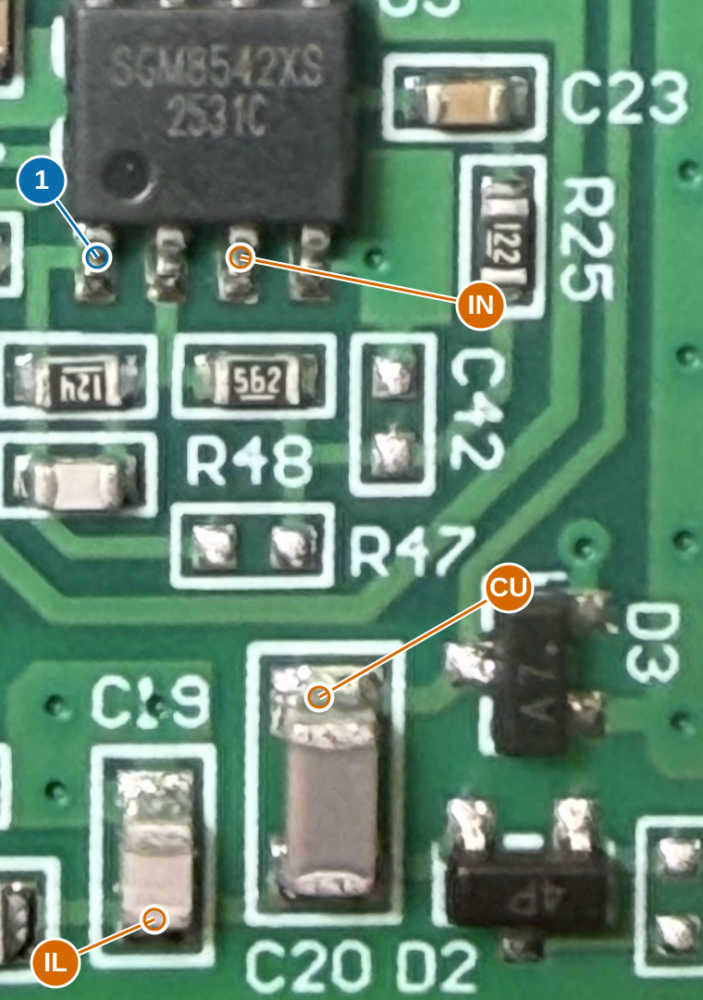
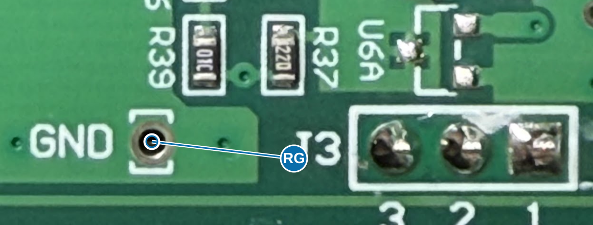

v0.9.52 | In-circuit batch completed; no active measurement form
No bench setup is needed. There are no pending readings.
No pending readings. RX-3 (U3 native pin3 to TP7) is deferred by owner request on 2026-10-15; it has not been measured. RX-1/RX-2 and the earlier C20-lower checks are completed and must not be repeated. Latest owner reports establish U3.3-VREF, C19 lower-C20 lower/R28 right/D2.R, and C20 upper-R42 lower/D3.S. No new measurements are requested.
RX-1 and RX-2: U3 pin3, C19 lower and C20 upper

IL: C19 LOWER/model1 metal terminal, immediately above the bottom silkscreen line. RX-1 red probe.
IN: U3 native pin3: third LOWER lead from the left. Pin1 is beside the package dot at lower-left. RX-1 black probe.
CU: C20 UPPER/model1 metal terminal, nearest D3; NOT the lower end used in the completed tests. RX-2 red probe.
ID
Red probe
Black probe
Condition
Reading
RX-1
IL
IN
Unpowered; resistance; all components fitted
1.023 Mohm
RX-2
CU
RG
Unpowered; resistance; all components fitted
271 kohm
RX-2 black probe: the printed GND hole beside J3

RG: Printed PCB GND test hole beside J3; model GND.1/native TP101.1. RX-2 black probe.
Other probe location for the same reading above; no additional test.
RX-1 C19 lower/model1 to U3.3 = 1.023 Mohm (raw 1.023mohm, interpreted as megaohms); RX-2 C20 upper/model1 to printed GND = 271 kohm; shorted probes = 1 ohm. Settling/drift not reported. Both inherited direct joins withdrawn in v0.9.47; replacement destinations remain unknown. The U3.3 signal/bias feed and the onward destinations of C19.1 and C20.1 remain unresolved. Deferral supplies no new connection evidence and does not close E11.
Nothing is sent automatically. Copy and paste into the chat, or download a text file.
What follows
Audit connection evidence and device qualifications - Six modeled nets retain specific gaps in independent copper evidence. Device functions, voltage ratings and operating behavior remain qualified. The three receiver destinations are established; see the existing audit for the remaining groups.
Recover critical component values - All 44 unknown ceramics have numerical design candidates, ratings and dielectrics: 12 supply, 17 signal/timing and 15 RF-bank seeds. Validation remains; no broad measurement batch is active.
Finish interface and package mapping - LED colour branches and J5 board-contact/output mapping are established. LED footprint, connector fit and external motor harness orientation remain reproduction qualifications.
Integrate the working external button bridge - Owner confirms remote button/motor operation and installation. USB-C powers the ESP; its 5V header feeds PetSafe battery-positive with cells removed and converter output disconnected. Camera recognition/admission and power-margin qualification remain. Factory circuit unchanged.
ERC: 1 findings: the retained U6/U6A output conflict. Latest owner reports resolve the three receiver endpoints and their previous four findings. U6A is DNP; its regulator symbol remains by your request. No new no-connect or ERC exclusion was introduced.